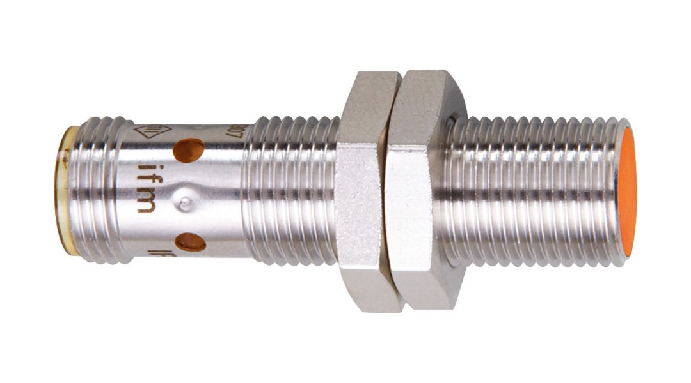

Vigilar la velocidad de un eje El sensor cuenta dientes y el PLC calcula las rpm

Cara activa a ≤ 3,24 mm del diente (distancia segura para acero)
PIN 1 BN → L+24 VDC de la fuente
PIN 3 BU → M0 V de la fuente
PIN 4 BK → I0.0entrada del PLC (sumidero)
f = dientes × rpm ÷ 60 A 3000 rpm con 12 dientes: 12 × 3000 ÷ 60 = 600 pulsos por segundo → menor que 700 Hz ✓. Si la frecuencia cae (correa rota o eje trabado), el PLC detiene el motor y da alarma.
La entrada del PLC también debe ser rápida: una entrada normal filtra pulsos; para 600 Hz usa un contador rápido.
Fuentes: hoja de datos del fabricante · IEC 60947-5-2 · IEC 60947-5-2 (colores y pines M12) · Foto: imagen oficial del fabricante